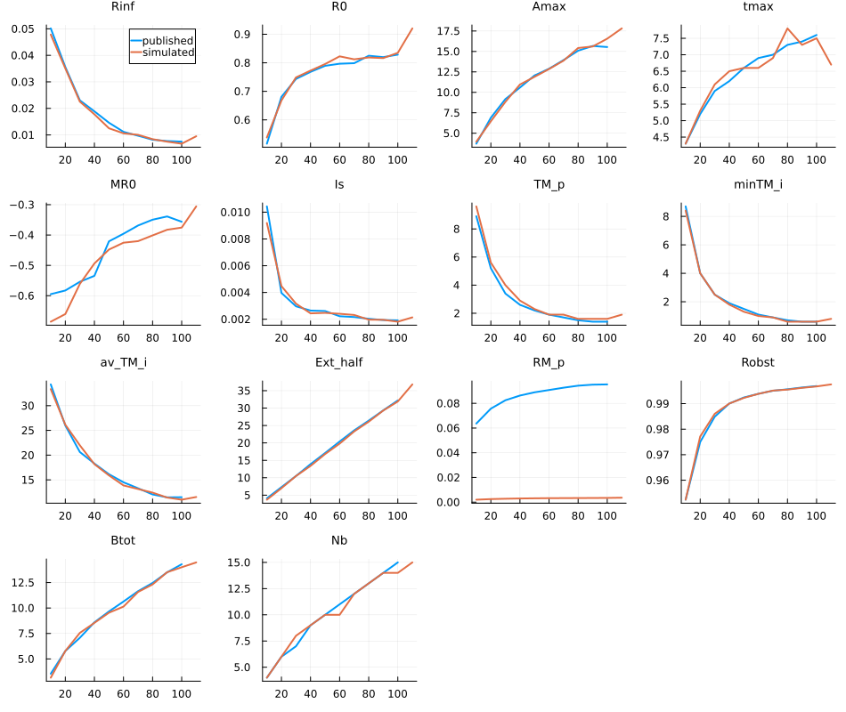

End to end: a simulated ensemble against the published one
Simon Frost
- Overview
- The metrics, size by size
- The analysis on simulated communities
- How correlations change with size
Overview
This vignette closes the loop. It compares an ensemble of communities simulated with this package (scripts/simulate_dataset.jl) with the authors’ Dataset S1/S2, first metric by metric and then through the paper’s analysis: correlations by size class, modular groups, and how correlations change with community size.
using EcologicalResilience
using CSV, DataFrames, Statistics, Random, Printf
using Plots
data = joinpath(pkgdir(EcologicalResilience), "data")
sim_raw = CSV.read(joinpath(data, "simulated", "ensemble_v4.csv"), DataFrame)
pub_raw = CSV.read(joinpath(data, "dominguez-garcia2019", "Dataset_S2.csv"), DataFrame)
(simulated = nrow(sim_raw), published = nrow(pub_raw),
median_seconds_per_community = median(sim_raw.seconds))(simulated = 3000, published = 9380, median_seconds_per_community = 7.095)Each simulated community was drawn with initial richness uniform on 5–110 and its own random seed (Sim<seed>), so every row can be regenerated.
The raw columns follow the published convention (community_record, convention = :published). Amax and tmax come from the ∞-norm of the propagator, and the four median metrics use the published pulse weights, which are misaligned after extinctions (published_pulse_covariance). The SI’s versions of these six columns are kept as *_si (see lab/wiki/analysis/published-conventions.md).
The metrics, size by size
bins = 5:10:105
binned(df, col) = [let v = df[(df.N .>= b) .& (df.N .< b + 10), col]
isempty(v) ? NaN : median(v) # the published data stop at N = 99
end for b in bins]
cols = [:Rinf, :R0, :Amax, :tmax, :MR0, :Is, :TM_p, :minTM_i, :av_TM_i, :Ext_half, :RM_p, :Robst, :Btot, :Nb]
plot([plot(bins .+ 5, binned(pub_raw, c); label = "published", lw = 2, title = string(c), titlefontsize = 9,
legend = c === :Rinf ? :topright : false) for c in cols]...; layout = (4, 4), size = (950, 800))
for (k, c) in enumerate(cols)
plot!(bins .+ 5, binned(sim_raw, c); subplot = k, label = "simulated", lw = 2)
end
current()
Medians by richness, in the raw columns of the dataset (before the sign changes of the analysis). The calibration targets were total biomass and the number of plants. The other panels are independent checks of the reconstructed simulator.
The analysis on simulated communities
The published Dataset S2 has 100 communities at each richness. The simulated ensemble is smaller, so its correlations at a single richness are noisier, but class averages pool 11 sizes.
sim = prepare_metrics(sim_raw)
pub = read_metrics(joinpath(data, "dominguez-garcia2019", "Dataset_S2.csv"))
analysed = 5 .<= sim.N .<= 99
share_varying(v) = 1 - maximum(count(==(x), v) for x in unique(v)) / length(v)
variation = DataFrame(metric = METRICS,
simulated = [share_varying(sim[analysed, l]) for l in METRICS],
published = [share_varying(pub[!, l]) for l in METRICS])
filter(r -> min(r.simulated, r.published) < 0.5, variation)<div><div style = "float: left;">2×3 DataFrame</div><div style = "clear: both;"></div></div><div class = "data-frame" style = "overflow-x: scroll;">
| Row | metric | simulated | published |
|---|---|---|---|
| String | Float64 | Float64 | |
| 1 | MAmax | 0.193615 | 0.221855 |
| 2 | Mtmax | 0.193615 | 0.221855 |